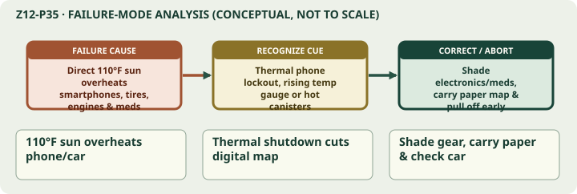

Z12-P35 · Extreme environments · New manuscript
Recognize heat-induced vehicle, tire, phone and battery overheating failures
Prevent stranding and communication loss caused by extreme desert temperatures degrading electronics, fuel and rubber.
When it applies · Summer desert driving, canyon travel and hot-weather outdoor work above 100°F.
Equipment · Shaded phone pouch, paper backup maps, vehicle coolant/tire check and insulated water jugs.

Actions
- Protect phones, GPS devices and lithium power banks from direct dashboard sun—modern devices trigger automatic thermal shutdown rapidly in direct 105°F+ sun, wiping out digital maps and 911 access right when needed.[X07, E02, ED]
- Check vehicle tire pressure/tread, coolant level and belts before remote desert stretches, turning off air conditioning on long steep grades if the engine temperature gauge climbs toward red.[X07, ED]
- Keep stored water jugs, medications (such as insulin or epinephrine) and pressurized camp fuel canisters out of direct scorching sun and hot closed trunks where pressure and thermal spoilage spike.[X07, W06, C15, T10]
Failure recognition · Leaving a smartphone navigating on a sunlit dashboard until thermal shutdown locks it out right as an overheated car stalls on an unpaved desert road.[X07, E02]
Verify · Confirm electronics stay shaded, paper backup maps are on hand, medications have thermal protection and vehicle cooling/tires pass pre-trip checks.[X07, E02, T10, ED]
Stop or change course · If a vehicle temperature gauge climbs sharply or tires show heat-blister damage, pull safely off-road in shade early before engine seizure or blowout occurs.[X07, ED]
Evidence and editorial notes
- C15 · NPS · Wildland Fire Safety (current web edition)
- Section: Wildland Fire Safety > Campfires and Stoves · Conditions: Outdoor cooking with portable liquid or canister stoves
Support: Operate stoves on level cleared ground away from tents and dry fuels, cool completely before refueling, and move away from any spilled fuel before lighting.
Limitations: Fuel canisters behave differently in cold weather and high elevation; follow manufacturer limits. · Conflicting evidence: None; aligns with CPSC-C and USFS-FIRE.
Editorial note: Governs stove setup, refueling isolation, and spill failure recognition. · Specialist reviewer: Portable appliance safety and fire prevention
Primary source · checked 2026-11-24 - E02 · NPS · Ten Essentials (current web edition)
- Section: Navigation; insulation; emergency shelter; emergency food and water · Conditions: Outdoor trips; adjust kit to season and route
Support: Carry essential systems including navigation, insulation, light, water and emergency shelter.
Limitations: Carrying items without practice or cold-weather verification does not ensure readiness. · Conflicting evidence: None; baseline kit system architecture.
Editorial note: Supports failure-mode packing and kit verification cards. · Specialist reviewer: Field education and search and rescue
Primary source · checked 2026-11-24 - T10 · FEMA / Ready.gov · People with Disabilities (current web edition)
- Section: People with Disabilities > Make a Plan and Build a Kit · Conditions: Individuals with mobility, sensory, medical, or power-dependent access and functional needs
Support: Build a personal support network, plan accessible evacuation transport, register voluntarily with local emergency registries where available, and plan backup power and spare supplies for medical devices, medications, and service animals.
Limitations: Local registry availability and utility priority-restoration policies vary by jurisdiction. · Conflicting evidence: None; extends generic preparedness plans to accessible requirements.
Editorial note: Directly addresses Z01 accessible emergency planning requirement. · Specialist reviewer: Accessible emergency management and disability preparedness
Primary source · checked 2026-11-24 - W06 · CDC · How to Create an Emergency Water Supply (current web edition)
- Section: How to store emergency water; Safe storage containers · Conditions: Potable water intended for emergency storage
Support: Prefer sealed commercial water or clean food-grade tight-closing containers. Avoid containers that held toxic chemicals.
Limitations: Container shelf durability and rotation depend on plastic/material type and storage heat. · Conflicting evidence: None; reinforces strict raw-vs-clean segregation.
Editorial note: Used to enforce labeling and dedicated raw/potable vessel separation. · Specialist reviewer: Drinking-water safety and public health
Primary source · checked 2026-11-24 - X07 · NPS · Death Valley Safety (Desert Travel and Heat) (current web edition)
- Section: Death Valley Safety > Desert Heat, Dehydration, Flash Floods and Vehicle Breakdown · Conditions: Arid desert travel, canyon country and extreme summer heat
Support: Desert heat accelerates fluid and electrolyte loss rapidly, temperatures inside parked vehicles spike to fatal levels within minutes, dry washes flash-flood from distant storms and staying with a disabled road vehicle is generally safer than walking into extreme heat.
Limitations: Cell service is widely absent across desert basins; water needs can exceed 1 gallon/day dramatically during heat. · Conflicting evidence: None; aligns with CDC-HEAT and NWS-HEAT.
Editorial note: Core desert-environment evidence across Z12 heat/arid cards. · Specialist reviewer: Desert safety and emergency medicine
Primary source · checked 2026-11-24
Source lineage · NPS desert safety and Ready.gov kit; new manuscript · Classification · New manuscript.